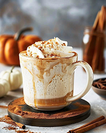

Pumpkin Spice Latte

This classic fall drink is a must-try! Made with espresso, steamed milk, pumpkin puree, and a blend of spices, it's the perfect way to warm up on a chilly autumn day.
- espresso
- steamed milk
- pumpkin puree
- cinnamon
- nutmeg
- cloves
- sugar
- Brew a shot of espresso.
- In a small saucepan, combine pumpkin puree, sugar, and spices. Heat until warm.
- Add the espresso to the pumpkin mixture and stir.
- Pour steamed milk into the mixture and top with whipped cream and a sprinkle of cinnamon.